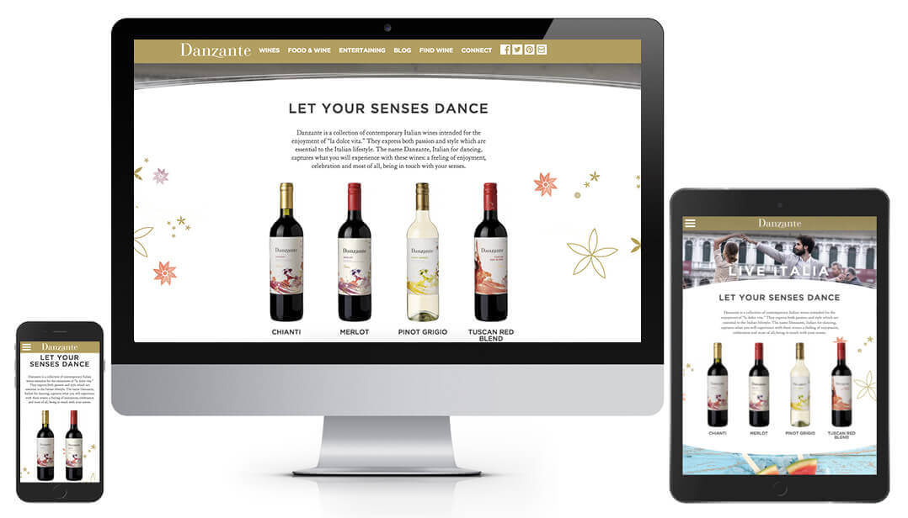
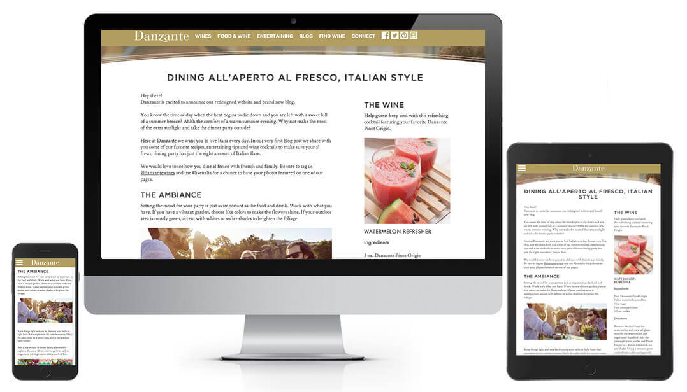

Danzante Wines updated their brand's look to be clean and modern. They came to Intwine Marketing to design a website that matched the new branding. Part of the website redesign included making the website responsive and rethinking how their content could be be utilized.
The new label was a complete reimagining of their brand. It's clean, colorful, and uses watercolor style imagery. We took several routes for the initial designs, options that incorporated more watercolor elements and mirrored the labels. However, the final design pulled away from this to allow the content to be the star.
The brand had a huge store of content, recipes, entertaining tips, and DIY projects. This was a big factor in the final sitemap and appearance. Instead of content being scattered throughout the site it would now be accessible through a blog page. The layout of the site is very editorial and keys the user into the content oriented experience.
Visit the Website